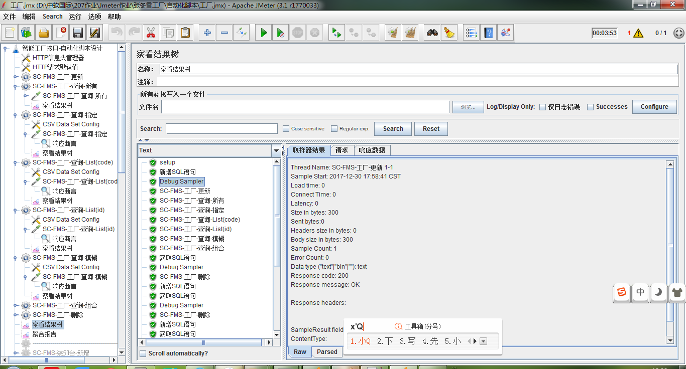
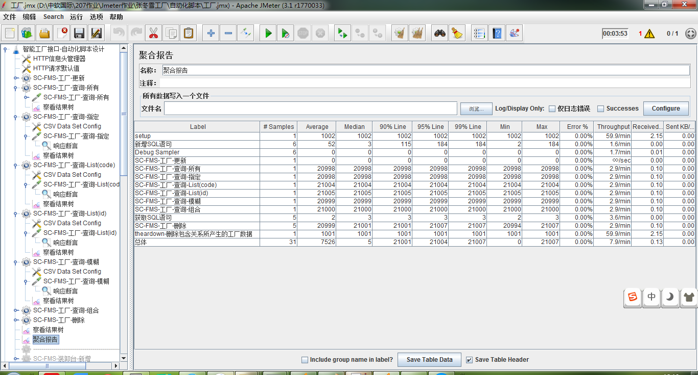
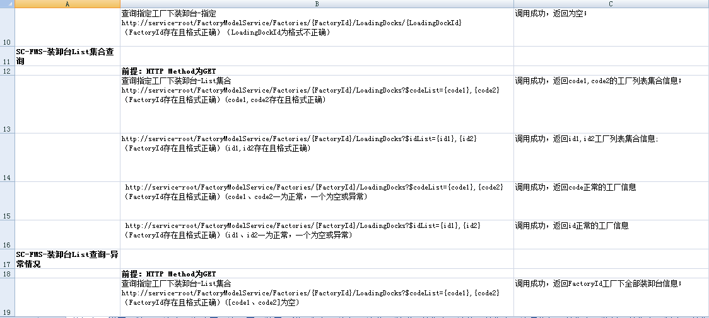
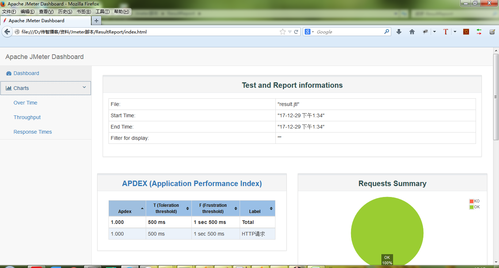
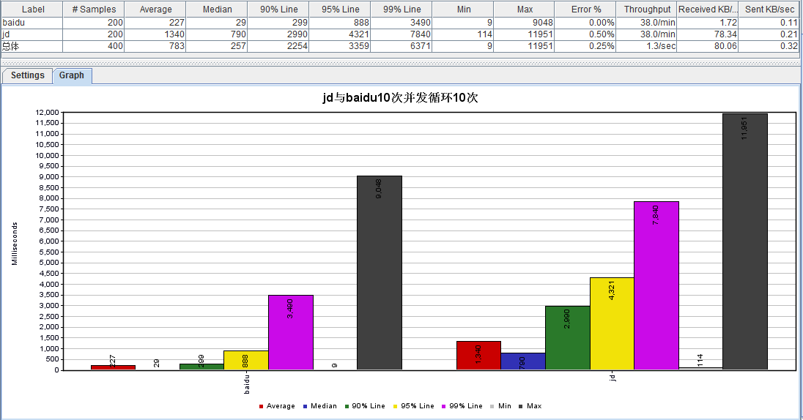
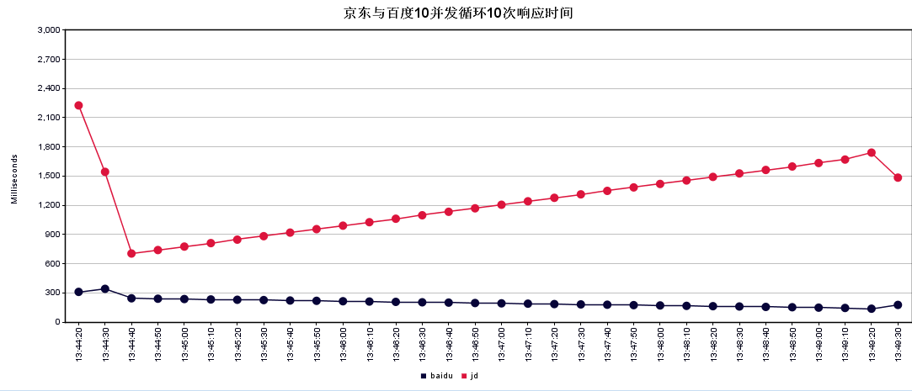

接口测试
目标
- 明确为什么我们要学习接口测试
程序开发中为什么要使用接口？
了解在项目开发中，未采用接口时的缺点
- 缺点：
1. 研发标准不统一，团队磨合难度高 2. 研发周期长 3. 可扩展性差
了解项在目开发中，采用接口带来的优点
- 优点：
1. 统一设计标准； 2. 前后端开发相对独立； 3. 扩展性灵活； 4. 前后端都可以使用自己熟悉的技术；
接口
定义：接口就是不同工作顺利交互的标准
总结：
- 软件项目开发模式大多数都采用接口了，那我们作为软件测试人员要学接口吗?
2. 接口测试课程大纲
2.1 安排
| 序号 | 阶段 | 内容 |
|---|---|---|
| 01 | 第一阶段 | - 理解接口测试 |
| 02 | 第二阶段 | - 熟悉Jmeter工具组成 |
| 03 | 第三阶段(核心) | - 参数化、集合点、关联、断言、数据库 |
| 04 | 第四阶段 | - 属性管理器及逻辑控制器 |
| 05 | 第五阶段 | - 项目实战(接口功能脚本、自动化脚本、性能脚本) |
3. 接口学完样品
3.1 Jmeter工具元件使用
- 
3.2 聚合报告
- 
3.3 用例设计
- 
3.4 html性能报告
- 
3.5 Aggregate Graph
- 
3.6 Response Time
- 
4. 学完这套课程，我学到到什么
1. 熟练使用Jmeter工具；
2. 掌握接口测试规范和RESTful风格；
3. 掌握基于Jmeter完成接口测试（功能、自动化、性能）脚本；
4. 掌握基于Jmeter对Web项目性能压测；